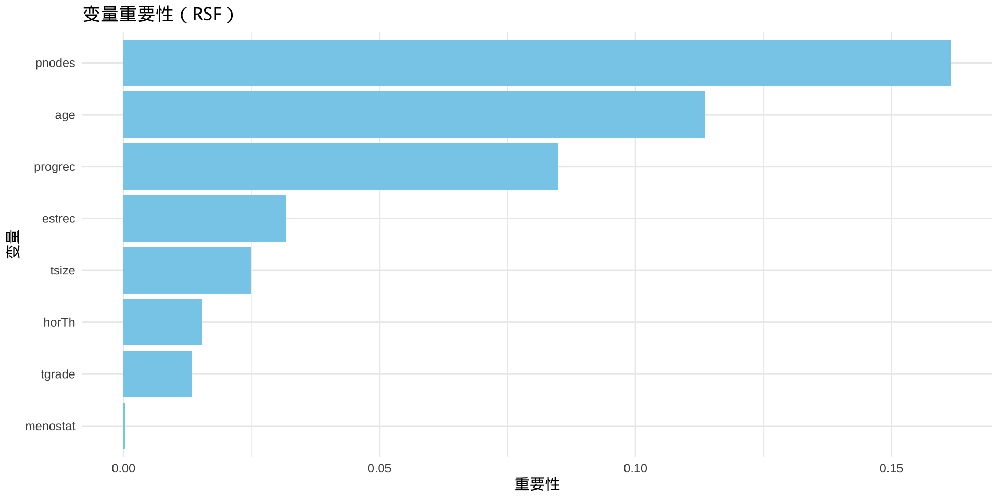
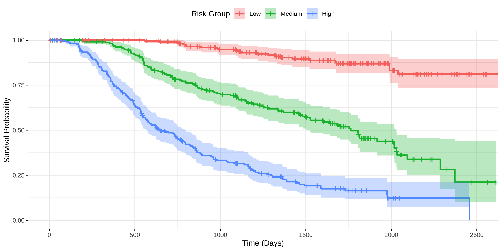
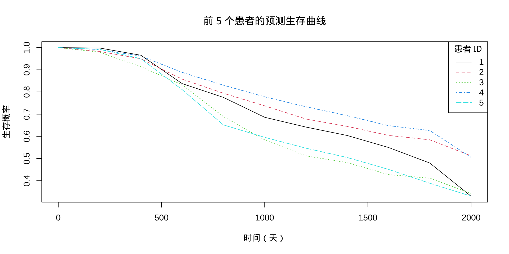

2025-07-18
7.1 Cox模型简介
7.2 Cox模型的数据结构
7.3 Cox模型的估计
7.4 Cox模型的检验
随机生存森林 (Random Survival Forest) 是随机森林 (Random Forest) 在生存分析中的扩展，结合了决策树和集成学习的思想，适用于处理生存时间数据。
传统生存分析方法（如 Cox 模型、AFT 模型和竞争风险模型）在许多场景下表现良好，但对数据分布或比例风险假设有一定限制。机器学习方法通过构建非参数模型，适应非线性关系、高维数据和交互效应，扩展了生存分析的应用。
RSF 是一种基于随机森林的扩展，结合多棵生存树预测生存时间或风险。每个树基于随机样本和特征子集构建，输出累积风险函数（CHF）或生存概率。
优点：
无需假设比例风险或特定分布。
处理高维数据和非线性关系。
提供变量重要性分析和可视化。
R 实现：使用 randomForestSRC包，代码简洁，可视化工具丰富（如生存曲线、风险分布）。 适合人群：初学者，易于理解和调试。
基于生存树的集成：RSF 通过构建多棵生存决策树（Survival Tree），每棵树基于随机采样的数据子集和特征子集训练。生存树不同于传统分类树，它的目标是预测生存时间或累积风险函数 (Cumulative Hazard Function, CHF)，而不是简单的分类或回归。
Bootstrap 采样与随机特征选择：使用 Bootstrap 方法从原始数据中随机抽样（有放回），并在每次分裂节点时随机选择特征子集（控制参数 mtry），增加模型的多样性和鲁棒性。
预测输出：每个树输出个体的生存概率或风险分数，RSF 通过所有树的平均或加权组合生成最终预测。输出包括生存函数 $ S(t) $ 或累积风险 $ H(t) $。
袋外数据 (Out-of-Bag, OOB)：未被抽样到的数据用于验证模型，计算 OOB 误差，评估预测性能。
RSF 的建模过程避免了强分布假设（如指数或 Weibull 分布），通过非参数方式适应复杂数据模式。
无强假设：不要求比例风险假设（Cox 模型）或特定时间分布（AFT 模型），适合非线性关系和复杂交互效应。
鲁棒性：通过随机性和集成学习，RSF 对异常值、缺失值和噪声数据具有较强容忍度。
变量选择与重要性：自动评估变量重要性（Variable Importance, VIMP），帮助识别关键预测因子，无需手动筛选。
高维数据处理：适合包含大量协变量的数据集，自动处理特征冗余。
丰富的可视化：提供生存曲线、风险分布、部分依赖图等，直观展示结果。
灵活性：通过调整参数（如 ntree, mtry, nodesize），可平衡偏差和方差。
计算复杂度：随着树的数量 (ntree) 和数据规模增加，计算成本较高，适合中型数据集，不如线性模型高效。
解释性有限：相比 Cox 模型的系数解释，RSF 的输出（如风险分数或生存概率）更难直观解读，尤其是交互效应的贡献。
超参数敏感：参数 mtry, nodesize, 和 ntree 需要调优，设置不当可能导致过拟合或欠拟合。
数据稀疏性问题：在事件发生稀少或时间点分布不均的数据中，RSF 的性能可能下降，树的分裂效率降低。
非参数性质：缺乏概率分布假设，可能无法提供统计推断（如置信区间），更适合预测而非因果分析。
RSF 适用于以下场景：
复杂非线性关系：当协变量与生存时间存在非线性或高阶交互效应时（如基因数据或影像特征）。
高维数据：当变量数量远超样本量（如基因组学研究），RSF 可自动降维。
异质性数据：当患者群体异质性高，传统模型（如 Cox）假设不成立时。
探索性分析：用于发现重要变量或生成预测模型，特别适合初始研究阶段。
竞争风险存在：尽管 RSF 不是专为竞争风险设计，但可通过扩展（如多状态模型）处理。
最小要求：建议样本量至少为 100-200 个观测值，以确保 Bootstrap 采样的有效性。事件数（非删失样本）应至少为 50-100，以提供足够的信号。
理想范围：500-1000 个样本可获得较稳定的结果，大样本（>1000）进一步提升性能。
限制：样本量过小（如 <50）会导致树分裂不足，模型性能下降；事件稀少可能加剧此问题。
最小要求：至少 5-10 个协变量，足以构建有意义的树。
理想范围：10-100 个变量，RSF 在高维场景中表现最佳（例如基因组数据可能有数千变量）。
限制：变量过多（>1000）可能导致计算负担增加，需调整 mtry 减少特征选择范围；无关变量过多可能降低效率，建议预处理去除噪声。
事件-变量比：
建议事件数至少是变量数的 5-10 倍，以避免过拟合。たとえば，100 个变量时，事件数应 >500。
nodesize（终端节点最小样本数）：通常设为 5-15，样本量大时可适当增加。 mtry（每次分裂选择的特征数）：默认值为 \(\sqrt{\text{变量总数}}\)，可根据变量数量调整。
{TH.data}GBSG2: 686 名乳腺癌患者
time：生存时间（天）。
cens：删失状态（1=事件发生，0=删失）
horTh：激素治疗（yes/no）
age：年龄
menostat：绝经状态（Pre/Post）
tsize：肿瘤大小（毫米）
tgrade：肿瘤分级（I/II/III）
pnodes：淋巴结数量
progrec：孕激素受体
estrec：雌激素受体
目标：预测生存时间，评估协变量对生存的影响
样本容量：686，事件数 299，满足最小要求。 变量个数：9 个协变量，事件-变量比约 33，适合 RSF。 变量重要性：pnodes 和 tsize 通常排名靠前，反映临床意义。
Sample size: 686
Number of deaths: 299
Number of trees: 500
Forest terminal node size: 15
Average no. of terminal nodes: 33.128
No. of variables tried at each split: 3
Total no. of variables: 8
Resampling used to grow trees: swor
Resample size used to grow trees: 434
Analysis: RSF
Family: surv
Splitting rule: logrank *random*
Number of random split points: 10
(OOB) CRPS: 392.95887187
(OOB) stand. CRPS: 0.15999954
(OOB) Requested performance error: 0.30630935输出解读
Sample size: 686 总样本量为 686，表示模型训练时使用的观察总数。 Number of deaths: 299 发生事件（死亡或目标结局）的数量为 299，剩余样本为审查（censored）数据。 Number of trees: 500 模型构建了 500 棵决策树，这是随机森林的核心参数，控制模型的稳定性和泛化能力。树数较多通常提高精度但增加计算成本。 Forest terminal node size: 15 每棵树的终端节点（leaf node）最小样本数为 15。这是树的复杂度控制参数，防止过拟合。 Average no. of terminal nodes: 33.166 平均每棵树有约 33.166 个终端节点，反映树的平均深度和复杂度。
No. of variables tried at each split: 3 每次分裂时随机选择的变量数为 3。这是随机森林的关键特征，通过限制变量数量引入随机性，减少相关性。 Total no. of variables: 8 模型总共使用了 8 个预测变量，可能是如 sex, age, ulcer 等特征（具体取决于数据）。 Resampling used to grow trees: swor 使用了“sampling without replacement”（无放回抽样）方法生长树。这确保每个树基于不同的子样本，提高模型多样性。 Resample size used to grow trees: 434 每棵树生长时使用的子样本大小为 434（约占总样本 686 的 63%），这是无放回抽样的结果。 Analysis: RSF 分析类型为随机生存森林（Random Survival Forest），专门用于生存数据。
Family: surv 模型家族为“surv”（生存分析），表示处理时间到事件数据。 Splitting rule: logrank random 分裂规则基于 log-rank 统计量，带随机性（random），用于优化节点分裂以最大化生存差异。 Number of random split points: 10 每次分裂尝试 10 个随机切分点，增加随机性并提高计算效率。 (OOB) CRPS: 395.67263386 外部样本（Out-Of-Bag, OOB）累积预测误差 (Cumulative Rank Probability Score, CRPS) 为 395.67。CRPS 衡量预测分布与实际观测的匹配程度，值越小越好。 (OOB) stand. CRPS: 0.16110449 标准化 OOB CRPS 为 0.161，标准化后值在 0 到 1 之间，0.161 表示中等预测精度。 (OOB) Requested performance error: 0.30879613 请求的 OOB 性能误差为 0.309，通常与交叉验证或特定指标（如 Brier 分数）相关，反映模型预测误差的基准。
Variable Importance
pnodes pnodes 0.1616414459
age age 0.1134901861
progrec progrec 0.0848160926
estrec estrec 0.0317991599
tsize tsize 0.0249066132
horTh horTh 0.0153466834
tgrade tgrade 0.0134290742
menostat menostat 0.0002661427Importance：变量重要性得分，数值越大表示该变量对预测生存时间或事件发生的贡献越大。
总体解读 排名：pnodes 是最重要变量，贡献约占 16.2%，远高于其他变量。age 和 progrec 也显著，贡献分别约 11.3% 和 8.5%。menostat 几乎无影响 (0.05%)。
分布：重要性得分差异较大，前三变量 (pnodes, age, progrec) 占主导，其余变量影响较弱。
含义：这些得分反映变量在 RSF 分裂过程中的累积影响，通常通过 OOB 误差的减少量计算。
得分高表示该变量在区分生存时间或事件发生方面更有效。

风险分数（Risk Score）: RSF 模型预测的个体生存风险指标，通常表示个体发生目标事件（如死亡）的相对风险或预期生存时间。
在生存分析中，风险分数通常是基于累积危险函数（Cumulative Hazard Function, CHF）或类似度量计算的数值。
风险分数值越高，表示该个体发生事件的概率越大或生存时间越短。
对于 rsf_model，风险分数可能是每个样本的预期累积危险值（或其转化形式），反映了基于输入特征（如 age, pnodes 等）预测的死亡风险。
# 低中高风险组分组KM曲线
# 拟合 Kaplan-Meier 模型
surv_fit <- survfit(Surv(time, cens) ~ risk_group, data = gbsg2)
# 绘制 Kaplan-Meier 曲线
library(survminer)
ggsurvplot(surv_fit,
data = gbsg2,
palette = "set1", # 低、中、高风险颜色
ggtheme = theme_minimal(),
legend.title = "Risk Group",
legend.labs = c("Low", "Medium", "High"),
xlab = "Time (Days)",
ylab = "Survival Probability",
conf.int = TRUE) # 添加置信区间Call:
survdiff(formula = Surv(time, cens) ~ risk_group, data = gbsg2)
n=685, 1 observation deleted due to missingness.
N Observed Expected (O-E)^2/E (O-E)^2/V
risk_group=Low 226 24 129.5 85.9880 155.4768
risk_group=Medium 226 102 104.3 0.0502 0.0772
risk_group=High 233 173 65.2 178.4172 235.7229
Chisq= 275 on 2 degrees of freedom, p= <2e-16 
library(reshape2)
library(ggplot2)
# 假设 rsf_model 已经训练好，gbsg2[1:5, ] 是5个新样本
library(pec)
times <- seq(0, 2000, 100)
surv_pred <- predictSurvProb(rsf_model,
newdata = gbsg2[1:5, ],
times = times)
# 转成长数据框
df_long <- data.frame(
time = rep(times, 5),
surv = as.vector(t(surv_pred)),
patient = rep(paste0("患者", 1:5),
each = length(times))
)
head(df_long) time surv patient
1 0 1.0000000 患者1
2 100 0.9995317 患者1
3 200 0.9982135 患者1
4 300 0.9927463 患者1
5 400 0.9656378 患者1
6 500 0.9077589 患者1 time surv patient
100 1500 0.4959512 患者5
101 1600 0.4509512 患者5
102 1700 0.4115069 患者5
103 1800 0.3885710 患者5
104 1900 0.3495712 患者5
105 2000 0.3303903 患者5# 预测生存曲线（示例：前 5 个患者）
surv_pred <- predictSurvProb(rsf_model, newdata = gbsg2[1:5, ], times = seq(0, 2000, by = 200))
matplot(seq(0, 2000, by = 200), t(surv_pred), type = "l", col = 1:5, lty = 1:5,
xlab = "时间（天）", ylab = "生存概率",
main = "前 5 个患者的预测生存曲线")
legend("topright", legend = 1:5, col = 1:5, lty = 1:5, title = "患者 ID")
概念：GBM-Survival 使用梯度提升技术（类似 XGBoost）构建多个弱生存模型，逐步优化预测。目标是最小化损失函数（如负对数似然）。 优点： 捕捉复杂非线性关系。 通过调整参数（如学习率、树数）实现灵活性。 提供变量重要性和部分依赖图。 R 实现：使用 gbm 或 survivalmodels 包，结合 ggplot2 进行可视化。 适合人群：对提升方法有兴趣的初学者，稍复杂但直观。 2. 数据集介绍 我们使用 GBSG2 数据集（TH.data 包），包含 686 名乳腺癌患者的生存数据。
变量： time：生存时间（天）。 cens：删失状态（1=事件发生，0=删失）。 horTh：激素治疗（yes/no）。 age：年龄。 menostat：绝经状态（Pre/Post）。 tsize：肿瘤大小（毫米）。 tgrade：肿瘤分级（I/II/III）。 pnodes：淋巴结数量。 progrec：孕激素受体。 estrec：雌激素受体。 目标：预测生存时间，评估协变量对生存的影响。 3. 随机生存森林 (RSF) 示例 3.1 方法介绍 RSF 通过构建多棵树，预测每个患者的生存概率或风险分数。变量重要性帮助识别关键因素，如淋巴结数量（pnodes）。
https://lizongzhang.github.io/survival
© 2025 2025 医咖会 Li Zongzhang